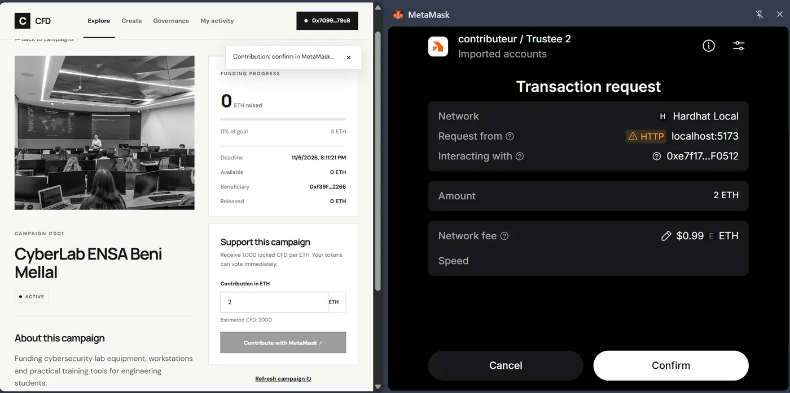
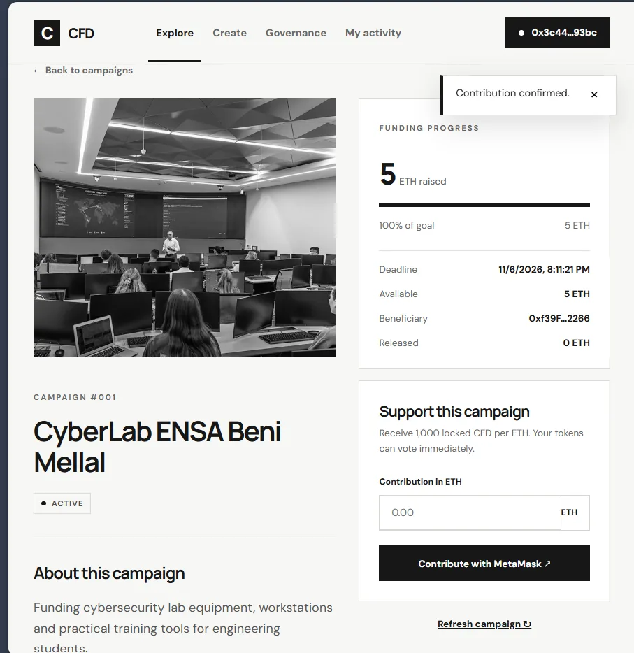
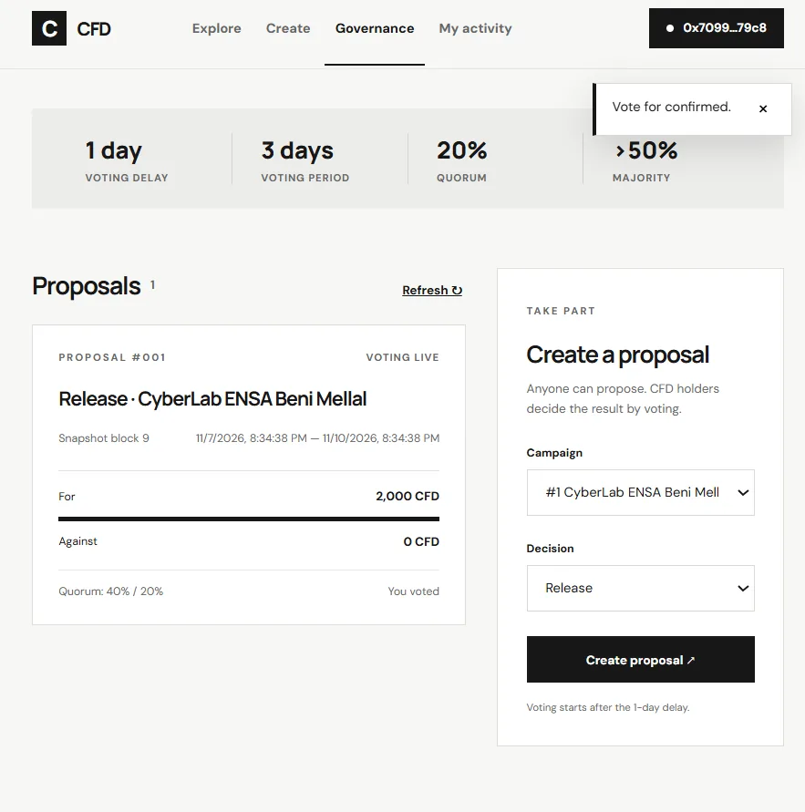
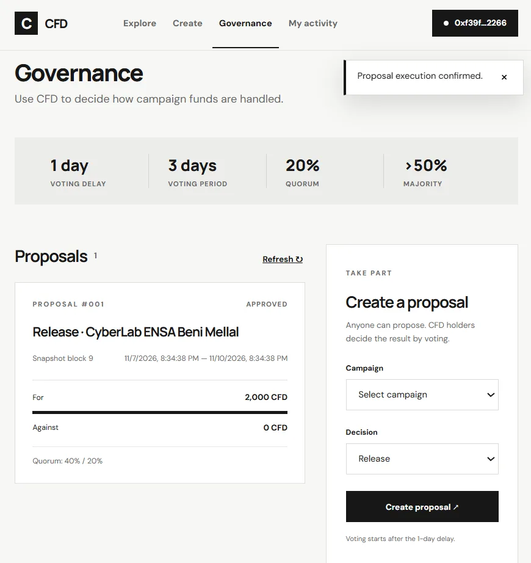

ACADEMIC TEAM PROJECT · 2026–2027 · BLOCKCHAIN & SECURITY
CrowdFund DAO: secure crowdfunding and token-weighted governance.
A decentralized crowdfunding dApp built by a three-person ENSA Beni Mellal team. Users create campaigns, contribute ETH, receive CFD voting power and vote on fund releases. The contracts manage refunds, payouts and the security controls around them.
01 / CHALLENGE
Keep campaign funds under contract rules, not one wallet.
The dApp keeps the crowdfunding flow inside the contracts: campaign creation, ETH contributions, CFD minting, refunds and controlled withdrawals. A beneficiary cannot move campaign funds until the contract conditions and the governance decision are satisfied.
Goal, deadline, beneficiary and IPFS metadata CID.
The crowdfunding contract accounts for funds and contributions.
The token contract mints 1,000 CFD per ETH contributed.
Vote on eligible proposals; perform controlled withdrawal or refund.
02 / ARCHITECTURE
What runs where.
The React frontend prepares contract calls with Ethers.js and MetaMask signs them. Crowdfunding.sol manages campaigns, ETH accounting and DAO decisions. CFDToken.sol handles token supply and voting checkpoints. IPFS stores campaign content while the contract keeps the metadata CID.
03 / CONTRIBUTION & TEAM CREDIT
What I worked on.
My engineering work — Kossi Richard Allado
- Implemented and tested CFDToken.sol: ERC-20 token, role-gated mint/burn, ERC20Permit/ERC20Votes integration and vote delegation behavior.
- Implemented and tested Crowdfunding.sol: campaign creation, contributions, finalization, refund and withdrawal accounting.
- Strengthened the accounting invariant: totalRaised = campaignBalances + campaignRefunded + campaignWithdrawn.
- Built and exercised targeted tests for refund behavior and a recursive-call reentrancy attempt using an attacker contract.
Shared team deliverables
- DAO proposals and token-weighted voting, including snapshots, quorum and majority.
- Multisignature controls, emergency pause, wallet-connected React application and IPFS flow.
- Hardhat integration and security verification; optional Python-based anomaly-signal checks.
- Presentation, integration and group demonstration.
Team: ADJEVI Kodjo Marius-Ben, ALLADO Kossi Richard, KPADENOU Kossi Roland.
This was a three-person project. The source repository is private and maintained by a teammate; this page separates my work from the parts delivered together.
04 / GOVERNANCE
The voting rules implemented in the contract.
CFD voting is part of the application, not Ethereum consensus. A proposal waits one day before voting opens and stays open for three days. Voting power is read from a historical snapshot; execution needs 20% participation and a strict FOR majority.
Example: 5,000 eligible CFD
At least 1,000 votes must participate to reach the 20% quorum. If 2,000 vote FOR and none AGAINST, quorum and majority conditions are met; execution still waits until the voting period closes.
DAO versus multisignature
The DAO records a collective decision weighted by eligible CFD votes. A payout above 10 ETH also requires approval from at least 2 of 3 designated trustees for the current withdrawal amount. The two mechanisms serve different purposes.
Release is a separate gate
Reaching a goal and finalizing a campaign as successful do not directly unlock funds. The beneficiary needs an executed Release proposal; before the deadline, the same rule permits an early release only after goal attainment and governance approval.
05 / DEMONSTRATION EVIDENCE
The local flow: contribution, vote and release.
These captures come from the local Hardhat demonstration. They show the campaign funded, the MetaMask contribution, the CFD vote and the approved Release proposal.




06 / VALIDATION
Checks run on the project.
| Control / test | What was checked or reported |
|---|---|
| Reentrancy defense | Targeted attacker-contract attempt, state-before-transfer accounting, and guarded refund execution. |
| Fund accounting | Historical amount raised separated from remaining balance, withdrawals and refunds, with accounting invariants. |
| Voting | Snapshot-based voting, one-day delay, three-day voting window, quorum and majority rules. |
| Emergency and payout controls | Role-gated pause can block contributions and ETH withdrawals; guarded ETH paths use reentrancy protection. Payouts above 10 ETH add the independent 2-of-3 trustee requirement. |
| Off-chain triage bonus | Read-only Python analysis flags repeated amounts, potential linked addresses through shared campaigns and contribution spikes. These are transparent review signals, not automatic fraud findings or freeze decisions. |
| Hardhat | 20 contract and integration tests pass with npm test. |
| Slither | The repository includes the static-analysis report and the documented review of its findings. Static analysis supports review; it does not replace a manual audit. |
| Python | 8 anomaly-analysis tests pass with npm run test:analysis. |
| Browser walkthrough | The browser flow covers image/metadata upload and reading, campaign creation, funding, voting, proposal execution, withdrawal, token unlock, finalization and refund. |
| Local services | Local demo stack: Hardhat chain ID 31337, Vite frontend on port 5173 and Kubo IPFS API on port 5001. |
07 / LIMITATIONS
Scope and next steps.
Deployment status
The current demonstration runs on a local Hardhat network. Advancing local blockchain time makes the one-day delay and three-day vote period practical to demonstrate during a classroom session. A public Sepolia deployment is the next deployment step.
Review and maintenance
The project still needs an independent external audit before any real-money use. Manual token unlocking after payment and the size of the main contract are the main areas to improve next.